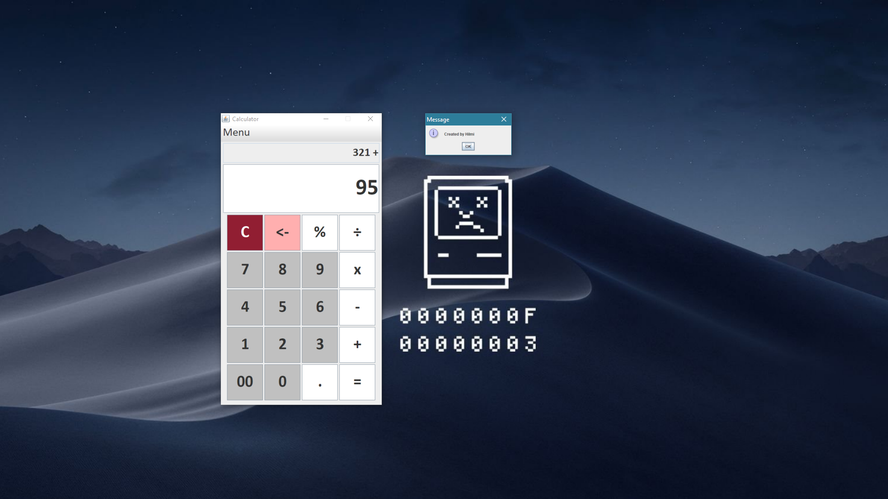

Calculator (Java Program)
A calculator program using Java Swing as the GUI.
A calculator program using Java Swing as the GUI.
Yeay, my first ever Github release is up! (22 Sept 2018 at 3am. What is life, huh? :P)

Screenshot of the app after Update 2
Oh yes. Addition, subtraction, multiplication, and division works like how you would expect from a simple calculator. It's a calculator after all..
Also, the '%' button works as a mod, rather than percentage.
This is actually the first project for my COMP 585 - GUI class. The project was due on 18 Sept 2018 and was already finished by then (for all the required functionality for the project), but I'm still continuing this project after that - adding more functionality, updating the looks, and etc etc mostly for fun.
// Adding color to all the buttons
private void setColor(JButton b) {
if ((text.charAt(0) >= '0') && (text.charAt(0) <= '9'))
b.setBackground(Color.LIGHT_GRAY);
else if (text.charAt(0) == 'C') {
float[] colorC = new float[3];
Color.RGBtoHSB(145, 30, 50, colorC);
b.setBackground(Color.getHSBColor(colorC[0], colorC[1], colorC[2]));
b.setForeground(Color.WHITE);
}
else if (text.charAt(0) == '<')
b.setBackground(Color.PINK);
else
b.setBackground(Color.WHITE);
}
Head over to the repository of this project on my Github page (https://github.com/hilmihisham/Calculator) to see more of the source code, and any other details regarding this project.